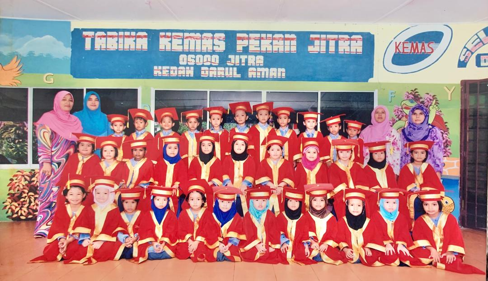
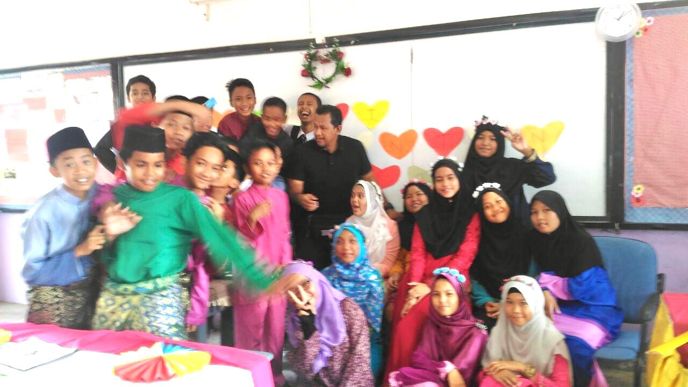
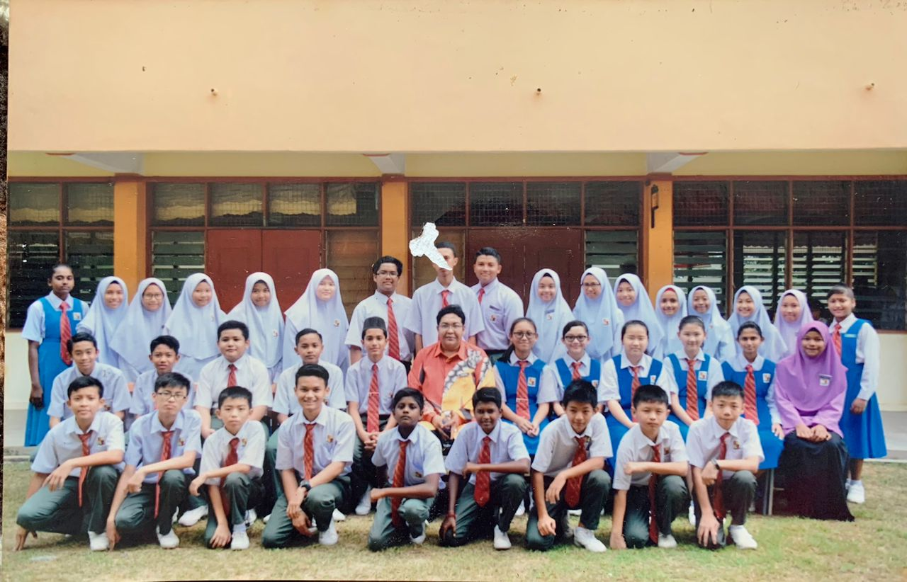
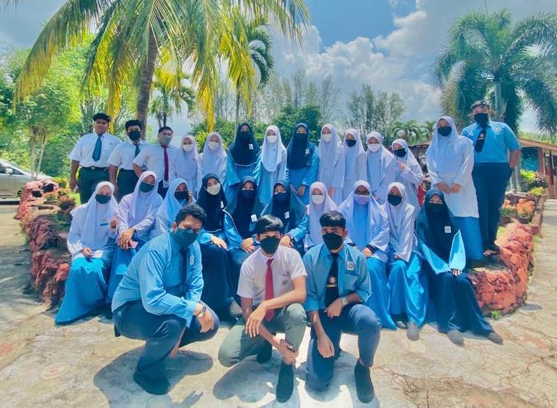
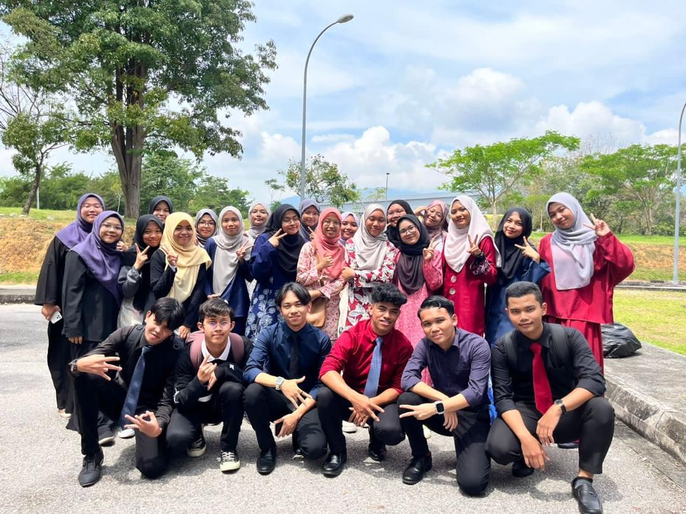

"The Learning Path: My Education Story"
PLEASE CLICK THIS PHASE OF EDUCATION:
- KINDERGARTEN (PRESCHOOL)
- PRIMARY SCHOOL (ELEMENTARY SCHOOL)
- SECONDARY SCHOOL (HIGH SCHOOL)
- HIGHER EDUCATION (UNIVERSITY)
1) KINDERGARTEN (PRESCHOOL) 📒

🌟 "I had the sweetest two years at Tabika Kemas Pekan Jitra, in 06000 Jitra, Kedah, from 2009 to 2010.
It was a magical place where every day was an adventure. I loved playing with colorful toys, singing
cheerful songs, and making crafts with glue and glitter that would end up everywhere! Storytime was
always my favorite, especially when the teacher used funny voices for the characters. During outdoor play,
we ran around the playground, laughing and chasing each other, while snack time felt like a mini feast with
my friends. I even remember learning my ABCs and numbers through fun games that made learning exciting.
Those two years were filled with laughter, love, and so many precious memories that will always hold a special
place in my heart." 🏫✨
2) PRIMARY SCHOOL (ELEMENTARY SCHOOL) 📒

🌟 "I spent six wonderful years at Sekolah Kebangsaan Sultan Ahmad Tajuddin, a Sekolah Berprestasi Tinggi, in Jitra,
from 2011 to 2016. It was a long and meaningful journey, filled with memories that shaped me into who I am today.
From my first steps in Standard 1 to the proud moment of completing my UPSR examination, the school became a second home.
Being part of a high-performing school was inspiring, as it pushed me to strive for excellence while enjoying
fun moments with my friends. I’ll never forget the exciting school events, encouraging teachers, and the sense of
pride in being part of such an amazing institution. Those years were truly unforgettable." 📚✨
3) SECONDARY SCHOOL (HIGH SCHOOL) 📒
- First school (2017 - 2019)

🌟 "I began my secondary school journey at SMK Seri Mahawangsa in Jitra, where I studied from 2017 to 2019.
Those years were some of the best times of my life, filled with excitement and growth. I enjoyed participating
in sports and school activities, making new friends, and experiencing the thrill of learning in a bigger school
environment. From morning assemblies to cheering for my team during sports events, every moment felt special.
I completed my PT3 examination there, marking an important milestone before moving on to the next chapter of
my education. SMK Seri Mahawangsa will always hold a special place in my heart for the friendships, lessons,
and unforgettable memories I made there." 🏫✨
- Second school (2020 - 2022)

🌟 "My secondary school journey at SMK Syed Ibrahim in Pendang from 2020 to 2022 was definitely unique,
as it took place during the COVID-19 pandemic. Even though things were challenging with online classes
and strict SOPs, I found a silver lining—I got to make amazing new friends from the village. We bonded
over shared experiences, from figuring out how to navigate virtual learning to enjoying moments of laughter
during breaks when we returned to school. Those years taught me resilience, teamwork, and the value of true
friendship, making them unforgettable in so many ways." 🌿✨
4) HIGHER EDUCATION (UNIVERSITY) 📒

🌟 "After completing my SPM examination, I began my journey at Universiti Teknologi MARA (UiTM), Kedah Branch,
in 2022. I am pursuing the IM110 course in Information Management, which spans 2.5 years with 5 semesters and
a short 2-month practical training only. This course offers a fast-paced and enriching learning experience,
preparing me for the professional world in a short time. I’m looking forward to completing my studies in 2025 and
join any programs to making the most of this incredible opportunity to grow and achieve my goals." 🎓✨